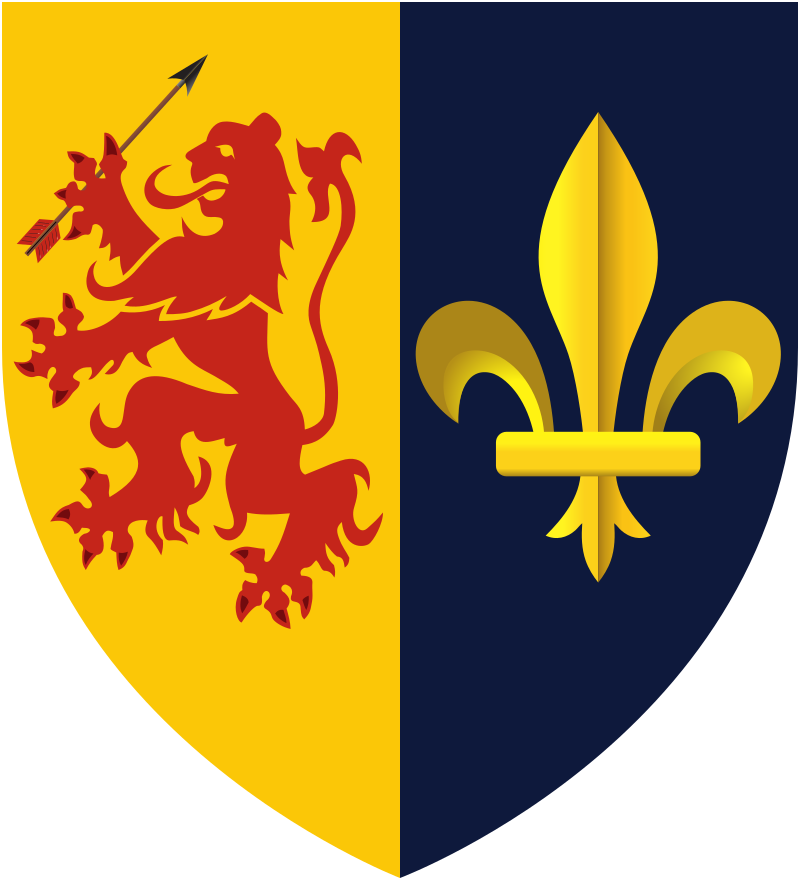
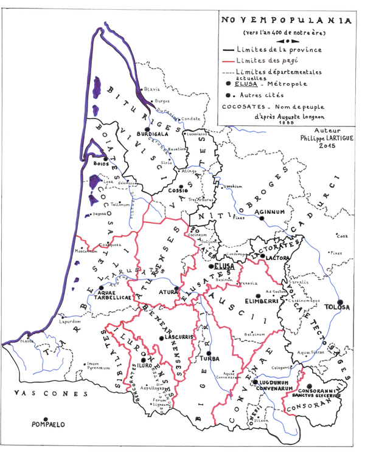
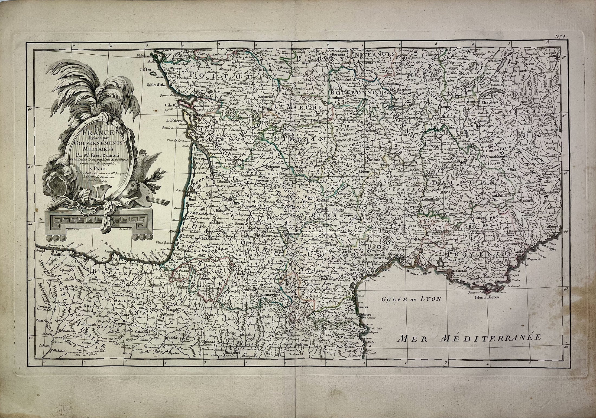
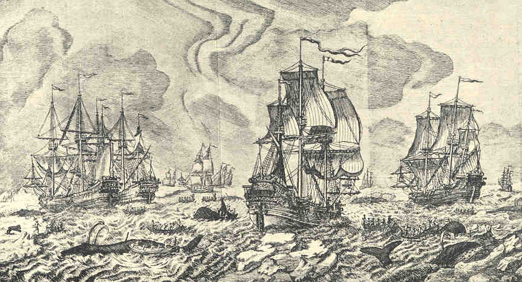
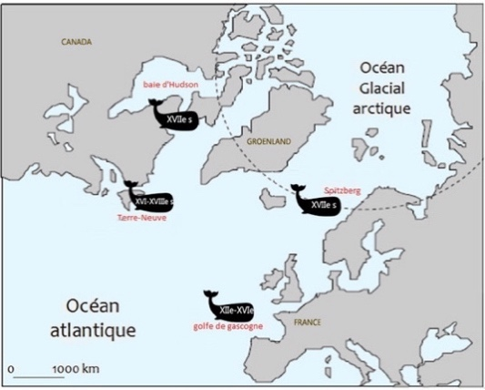
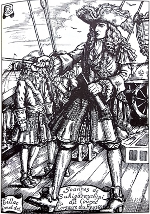

HISTOIRE DES BASQUES
—
| Labourd | Basse-Navarre | Soule |
|---|---|---|
 |
 |
 |
Les trois emblèmes ci-dessus sont ceux des provinces basques de France. Anciens et chargés d’histoire, ils représentent aussi bien les territoires que les traditions basques. Ils ont ainsi selon nous bien plus de sens que le « drapeau basque », emblème politique espagnol du Parti Nationaliste Basque imaginé en 1894. Ce parti politique s’est progressivement perdu dans une idéologie sans issue. Donc, place à l’histoire !
Antiquité et invasions barbares (1er s. – An mil)

Les premiers écrits mentionnant les habitants de notre territoire remontent à la Guerre des Gaules. Le géographe Strabon remarque que les Aquitains diffèrent des Gaulois par leur physique et leur langue. De ce fait, les peuples du sud de la Garonne – Gascogne actuelle – obtiennent une autonomie : c’est la Novempopulanie. L'archevêque d'Auch maintiendra jusqu'à la révolution le titre honorifique de « Primat de Novempopulanie et du royaume de Navarre ». Les Romains ne rencontrent apparemment pas de résistance, et Pompée donne son nom à Pampelune. Les Tarbelli habitent le Labourd jusqu’au nord de Dax. On suppose que les Vascons sont déjà présents dans les montagnes de Soule et de Basse-Navarre. La colonisation romaine se concentre sur les vallées fertiles du Béarn et des Landes.Après le passage des Vandales et des Wisigoths, les Vascons s’étendent par exodes massifs sur toutes les populations romanisées du Sud-Ouest. Basques et Gascons se différencient alors par leur romanisation relative. Les duchés d’Aquitaine et de Vasconie apparaissent à l’état d’ébauche. Dagobert soumet les Vascons en 635, mais son armée est durement touchée dans leur refuge de Soule.
Charlemagne, accueilli avec joie en 778 à Pampelune, dernier bastion chrétien avant les Sarrazins, ordonne d’en raser les remparts. La vengeance des Vascons est immédiate et ils détruisent par embuscade l’arrière-garde franque à Roncevaux.
Les Normands soumettent le Labourd à rude épreuve et s’emparent de Bayonne (Lapurdum) au IXe s. En 892, ils y martyrisent Saint Léon.
Epoque féodale
En 1023, la vicomté de Labourd est créée par Sanche le Grand, roi de Navarre. Celle de Soule est fondée la même année ; elle dépend des comtes de Bigorre, puis de ceux de Béarn à partir de 1078.
La féodalité se met en place au Pays Basque, mais les terres restent franches et nul n’est soumis à la servitude. Une multitude de petits fiefs s’organisent pour faire face aux Normands. Ils seront plus tard dissous par le roi d’Angleterre.
Au XIe s., le Christianisme s’épanouit. Les fondations monastiques fleurissent et renouvellent la face du Pays Basque. Lors du grand Schisme d’Occident, un second évêque s’installe à Saint-Jean-Pied-de-Port.
Domination anglaise (1155 – 1337) et conquête française
A partir de 1137, les féodaux basques perdent leur autonomie car les mariages d’Aliénor d’Aquitaine les placent successivement sous l’autorité du roi de France, puis du roi d’Angleterre. Ils se soulèvent, mais Richard Cœur de Lion s’empare de Bayonne. Après s’être déplacé à Ustaritz, le vicomte de Labourd se soumet finalement aux Anglais. Gaston VII de Béarn puis Philippe le Bel tentent de reprendre le Labourd, sans succès. A son tour, la Soule devient anglaise en 1307.
La guerre de Cent Ans est synonyme de paix au Pays Basque, les Anglais ayant porté la guerre ailleurs. Gaston de Foix-Béarn conquiert la Soule puis le Labourd en 1449, poursuivant à travers le pays une troupe de Basques et de Bayonnais à la solde du maire anglais de Bayonne. La conquête s’achève avec le renfort de Dunois, envoyé en 1451 appuyer le vicomte de Béarn.
L’amertume des Bayonnais est adoucie par un miracle : une croix blanche surmontée d’une couronne se changeant en lys leur apparaît dans le ciel lors de la prise du Château-Vieux.
Histoire du Royaume de Navarre, la France face à l’Espagne (1461 – 1530)

Depuis leur conquête par la France en 1451, des liens très forts et une fidélité inébranlable unissent le Labourd et la Soule au royaume des Lys, dépassant les deux siècles d’épreuves dûes à la rivalité avec l’Espagne, qui cherche à réaliser son unité. L’enjeu est la domination du royaume de Navarre.
Fondé en 824 par Eneko Arista suite à sa victoire à Roncevaux contre les Francs de Louis le Pieux, il s’étend sur une grande part de la péninsule ibérique à la mort de Sanche le Grand en 1035, puis est divisé par héritage.
Sanche VII le Fort, qui reçoit l’hommage définitif de la future Basse-Navarre, remporte avec la Castille et l’Aragon une victoire si éclatante sur les Maures à Las Navas de Tolosa en 1212, qu’elle anéantit à jamais les ambitions arabes, désormais cantonnés dans le Sud de la Péninsule.
Usé par d’incessants affrontements avec l’Aragon et la Castille, le royaume passe en 1234 entre les mains des comtes de Champagne par le neveu de Sanche VII, parmi lesquels quatre rois de France et de Navarre, de Philippe le Bel à Charles le Bel. La couronne se transmettant aussi par les femmes, le trône revient in fine aux derniers vicomtes de Béarn en 1479.
Ainsi en 1425, Jean d’Aragon, au détriment de son fils le prince de Viana, conserve le pouvoir reçu par sa femme et provoque une longue querelle de succession entre ses Agramontais et les Beaumontais, apaisée par Louis XI à l’entrevue d’Osserain en 1462. Léonor, du parti agramontais, sœur du prince et femme de Gaston IV de Foix-Béarn, reçoit alors la couronne de Navarre. Son petit-fils François Phébus en est le premier souverain béarnais.
En 1449, Gaston IV conquiert la Soule dominée par les Anglais, mais la France la lui reprend. Lors d’un arbitrage entre Navarre et Castille en 1463 à Urtubie, Louis XI l’échange enfin contre la mérindad d’Estrella au profit de Gaston IV, héritier de Navarre.
Le danger espagnol prend corps en 1512. Sous prétexte que la Navarre reste neutre malgré la déclaration du pape Jules II contre la France, Ferdinand, roi de Castille, s’empare de la Haute-Navarre puis de Saint-Jean-Pied-de-Port. Jean et Catherine d’Albret, injustement accusés de schisme, tentent à plusieurs reprises de recouvrer leur royaume. En 1512, les troupes béarnaises et gasconnes entrent dans Pampelune au cri de « Navarre, France ! », mais échouent malgré le concours du futur François Ier. En 1516, l’avant-garde basco-béarnaise de Jean III est battue à Roncevaux, dans un mètre de neige. Sous Henri II de Navarre en 1521, à la faveur de révoltes en Castille, la Navarre est reconquise par Lesparre avec 12 000 hommes du Béarn, de Soule, du Labourd et de Gascogne, mais les préparatifs ont trop duré. La Castille réagit et Lesparre est battu. C’est lors de cette prise de Pampelune que le futur Saint Ignace de Loyola est grièvement blessé, tandis que les frères de Saint François Xavier combattent du côté français. Ces opérations militaires sans résultat s’achèvent en 1523 où Bayonne, assiégée, résiste héroïquement aux Espagnols. Finalement, le traité des Pyrénées, signé en 1659 scellera la séparation des deux Navarre.
Réforme et guerres de Religion, règne d’Henri IV, de Richelieu à Mazarin, Traité des Pyrénées (1530 – 1660)
La rivalité franco-espagnole se poursuit avec deux incursions, maritime à Bayonne puis terrestre à Saint-Jean-de-Luz, qui est totalement brûlée en 1558. Sous prétexte de l’hérésie croissante, Philippe II obtient en 1568 du pape Pie V toute la partie du diocèse de Bayonne sise en territoire espagnol.
Par ailleurs, les funestes conséquences de la Réforme frappent Soule et Basse-Navarre à cause du zèle de Jeanne d’Albret à la propager en son royaume. En témoigne la traduction basque très répandue du Nouveau Testament, publiée en 1571 par Jean de Liçarrague à la demande de la souveraine. Se méfiant raisonnablement des nouveautés, les Basques restent d’abord passifs ou réfractaires à la Réforme. Cependant, la rigueur de Jeanne d’Albret pour l’imposer provoque des soulèvements catholiques en Basse-Navarre en 1567, peu avant la guerre civile de 1569. La Soule est alors prise de force par le seigneur de Luxe. La reine riposte à l’assaut français puis fait mettre au pas la Basse-Navarre. De nombreux sanctuaires sont détruits. La Soule est reprise par Belzunce en 1587. Le Labourd, dépendant de la France, reste quant à lui indemne.
Sous Henri IV, qui apaise la situation dans un esprit tolérant, les huguenots n’ont pas réussi à s’implanter solidement en Basse-Navarre. Seuls quelques noyaux calvinistes subsistent en Soule jusqu’au règne de Louis XIV. Henri IV exempte Basse-Navarre et Béarn des mesures qu’il prend pour réunir les seigneuries à la France – Louis XIII proclamera cette fusion en 1620, sans obtenir l’agrément des Etats de Basse-Navarre. Monseigneur d’Echaux, évêque de Bayonne, contribue aussi à l’apaisement des tensions. Emu par la violence de Pierre de Lancre lors des lamentables procès en sorcellerie de 1609, il le fait rappeler et fonde à Ciboure les Récollets, dédiés à Notre-Dame de la Paix. Sous son apostolat, il accueille Jansenius comme enseignant, ce qui laissera une empreinte janséniste dans la région.
L’affermissement de la monarchie française par Richelieu et Mazarin n’affectera pas le Pays Basque. Fait notable, lors du siège de La Rochelle en 1627, c’est un convoi de pinasses armées venues de Saint-Jean-de-Luz, avec 200 matelots volontaires, qui parvient à forcer le blocus anglais de l’île de Ré pour ravitailler les assiégés. Au cours de l’infiltration nocturne, le vent s’arrête d’un coup, stoppant net la flotte, à la merci des canons anglais. Désespérés, les marins se recommandent à la Sainte Vierge et le vent se réveille enfin. Exauçant leur vœu, ils construisent Notre-Dame de Socorri en action de grâces à Urrugne. La chapelle sera rasée par les révolutionnaires en 1793, mais reconstruite par la population en 1831.
Pinasse de Saint-Jean-de-Luz, 20 hommes d’équipage, vers 1620.
Toujours sous Louis XIII, la guerre de Trente Ans menace à nouveau la frontière. Les forts d’Hendaye et de Socoa sont reconstruits, ce qui n’empêche pas les Espagnols de balayer les milices labourdines en 1636 et d’occuper Urrugne, Ciboure et Saint-Jean-de-Luz pendant un an, la population s’étant réfugiée à Bayonne. En 1638, La Valette et Gramont repoussent l’envahisseur espagnol mais échouent à s’emparer de Fontarrabie. Le Traité des Pyrénées signé sur la Bidassoa met fin à ces affrontements en 1659.
Fors, assemblées et milices
Les Fors, dérivant de coutumes ancestrales et disposant de nombreuses attributions, désignent les chartes traditionnelles de droit public et privé dans les trois provinces.
Les Etats de Navarre sont créés par Henri II à Saint-Palais en 1523, en remplacement de ceux de Pampelune, puis deviennent Parlement de Navarre à Pau en 1620. Moins démocratiques que les antiques assemblées, ils réunissent une fois par an une dizaine de représentants du clergé, une trentaine du Tiers-Etat et les possesseurs de maisons nobles. Les rois de Navarre ayant anobli de nombreuses terres au cours des guerres médiévales, un sixième de la population navarraise est noble en 1512. On note qu’en matière de finances, le Tiers-Etat, qui en supporte le poids, l’emporte toujours.
Les plus anciennes traces écrites du Biltzar d’Ustaritz datent de 1567. Par privilège royal, il n’existe pas de différence de classes entre les Labourdins, ce qui leur donne droit de chasse et de pêche, mais les oblige à l’entretien des routes et au service militaire. A l’exclusion du clergé et de la noblesse, honorifique, le Biltzar réunit tous les maires-abbés de la province. Ceux-ci ne délibérent pas par eux-mêmes. Le syndic leur soumet d’abord ses propositions. Huit jours après, les maires-abbés rapportent la position de leur paroisse, après délibération directe avec leur communauté. Chaque paroisse a une voix égale.
Les registres souletins les plus anciens datent quant à eux de 1721. Compliqué, le système souletin tient des systèmes navarrais et labourdins : le Grand Corps réunit les gentillhommes, tandis que le Silviet, similaire au Biltzar, réunit le Tiers-Etat. Ces deux corps sont liés par un syndic à vie. La population a quinze jours pour se prononcer sur les propositions élaborées par le Grand Corps et le syndic.
Les Basques jouissent du droit de port d’armes et sont tenus d’entretenir des milices à leurs frais. Ainsi, la Navarre dispose de 1400 miliciens. Labourd et Soule ont chacune 1000 hommes, équipés par les paroisses. Ces milices sont utilisées pour le service d’ordre, comme gardes d’honneur ou pour la défense des frontières.
Les provinces basques ne reçoivent le renfort de troupes royales qu’en cas de danger. Un régiment souletin est créé au XVIIIe siècle par le chevalier de Béla, portant les armes de Navarre. Formés « à la prussienne », les hommes du Royal Cantabres se distinguent dans les Flandres.
Activité maritime, vie du Pays Basque (1660 – 1789)

Scène de chasse à la Baleine par les Basques
Les ports du Labourd s’étaient depuis le XIIe s. progressivement spécialisés dans la chasse à la baleine. Recherchée pour son huile, sa viande, ses fanons et ses os, elle est chassée dès le XVIe s. sur les côtes d’Amérique. Sous Louis XIV, on arme jusqu’à quatre-vingts trois-mâts et plusieurs milliers d’hommes partent chaque année en mer pour neuf mois de chasse depuis Saint-Jean-de Luz, au péril de leur vie. La baleine est chassée au harpon à partir de chaloupes.

Lieux de chasse à la baleine des Basques au cours des siècles.
Dès Henri IV, des capitaines de navires luziens reçoivent des lettres de course, comme le corsaire Etcheverry en 1590. Tirant parti des qualités des baleiniers basques, Louis XIV multiplie les lettres de course, qui concerneront jusqu’à 7000 Luziens et Bayonnais. Les exceptionnels faits d’armes de Johanes Suhigaraychipi, dit Coursic, lui donnent raison.

Le Pays Basque a connu sous l’Ancien Régime une relative prospérité, qu’atteste la reconstruction de deux tiers au moins des maisons rurales. Celles-ci correspondent pour la plupart à un niveau de vie supérieur ou égal à celui rapporté ailleurs en France. L’instruction est organisée par des particuliers, les paroisses (en basque) et les pensionnats religieux destinés à former l’élite, comme le Petit Séminaire de Larressore de l’abbé Daguerre. La vie religieuse de l’Eskual-Herri demeure très forte au XVIIIe s., sans secousses.
A la fin du XVIIIe s., des tensions apparaissent entre les nobles ou bourgeois anoblis, de plus en plus susceptibles et tâtillons, et la base, fragilisée.
Etats Généraux de 1789, nuit du 4 août, excès révolutionnaire, opérations militaires, directoire, consulat et Empire (1814 – 1940)
Peu enthousiastes à la convocation des Etats Généraux, les Basques estiment que leur constitution est la meilleure et que tout ce qu’ils peuvent désirer doit s’inspirer de principes consacrés et anciens. Ils attendent ainsi l’élargissement de leur statut de pays privilégié ; l’avenir les détrompera cruellement. Les cahiers des griefs montrent l’émouvante confiance des populations basques dans leur roi.
Pris par la fièvre versaillaise de la nuit du 4 août 1789, les députés des trois provinces trahissent leurs commettants et votent l’abolition des privilèges particuliers des provinces. Le Biltzar tente vainement de réagir, tandis que Navarre et Soule se montrent dociles.
Des « esprits avancés » s’étant emparés du pouvoir, les municipalités changent de nom, et surtout on pourchasse les prêtres réfractaires, majoritaires, qui deviennent de véritables « contrebandiers de la Foi ».
Le Labourd accueille mal le changement de régime qui ruine l’autonomie locale et les privilèges. Plus tard, la suppression du culte, dans ce pays essentiellement religieux, met le comble au mécontentement. Les révolutionnaires voient les Basques comme des « fanatiques » car ils se rendent en Espagne pour recevoir les sacrements. Ils les accusent d’intelligence avec les Espagnols en hiver 1794. Outre les exécutions sidérantes par guillotine à Saint-Jean-de-Luz, les habitants de Sare, Ascain, Biriatou, Itxassou, Espelette, Souraïde, Cambo, Larressorre, Macaye, Mendionde et Louhossoa sont déportés et parqués huit mois dans les Landes et le Gers, à 100 km de chez eux. Beaucoup meurent de faim et de misère. Ceux qui rentrent trouvent leur maison pillée ou brûlée.
Recrutés dans le pays de Cize et à Baigorry pour défendre la frontière contre l’Espagne en 1794, les Chasseurs Basques d’Harispe montrent des qualités guerrières exceptionnelles.
Au lendemain de la Révolution, l’histoire des Basques français se confond avec l’histoire générale de la France et la population reste prudemment indifférente aux changements de régime.
A la fin de l’Empire, des combats acharnés ont lieu sur la Rhune entre les troupes de Wellington et celles du maréchal Soult.
Le XIXe s. est un siècle de renouveau spirituel important au Pays Basque. Saint Michel Garicoïts ravive la dévotion pour le Sacré-Cœur. Le clergé est nombreux, exemplaire et soucieux de la transmission de la foi et des traditions face au modernisme. C’est à ce clergé que l’on doit la conservation formelle de la langue basque.
Fin XIXe et début XXe s., la pression démographique entraîne une émigration massive des basques vers le nouveau monde, principalement en Argentine, Uruguay, et vers le sud-ouest des États-Unis. Le pays est un vivier de vocations religieuses, et fournira notamment un grand nombre des missionnaires qui iront évangéliser le monde.
Témoin passif des conflits entre Basques et Espagnols jusqu’en 1936, le Pays Basque français accueille exilés et réfugiés des deux camps. Lors de la guerre d’Espagne, l’arrivée de réfugiés des provinces de Guipuzcoa et Biscaye entraîne l’apparition d’un nationalisme basque au Pays Basque français, et marque le début d’un important courant de renouveau culturel et linguistique qui, s’il a le mérite d’avoir évité la disparition de certaines coutumes, fait siens tous les principes de la modernité. Politiquement, l’aventure nationaliste et ses développements les plus extrêmes déchireront la société basque jusqu’à nos jours.
Conclusion
Comment poursuivre l’aventure basque ? Les royaume et provinces basques ont vécu, c’est un fait apparemment sans retour. Mais à défaut de structures officielles protectrices et rassurantes, les Basques conservent jalousement leur forte identité. Les initiatives ne manquent pas, et cela semble suffire à ce que chacun trouve son compte…
Ainsi de nos jours, on ne peut que se réjouir de la surabondance d’activités culturelles basques et y trouver une touche réconfortante face au chamboulement permanent des repères, de rigueur un peu partout en Occident. Le peuple basque, imperturbable, transmet encore ses us et coutumes comme de tout temps. Et pourtant, obéissant aux modes étrangères, la tendance se confirme aujourd’hui d’écarter délibérément du foisonnement culturel basque l’élément essentiel, le poumon, la raison d’être qui l’inspira naguère : la Foi en Jésus-Christ réssuscité et la dévotion à la Très Sainte Vierge Marie.
Pourquoi s’en alarmer ? Eh bien d’abord parce que c’est dans la Foi que résidaient l’espérance et le bonheur partagés, et c’est demeuré vrai à l’épreuve des siècles. Certes, c’était exigeant. Mais la discipline de vie était librement consentie et pratiquée avec zèle, comme en témoigne l’élan généreux des missionnaires issus de notre terre. Par ailleurs, là où plus que partout ailleurs, le prêtre était un oncle, un fils, un cousin, la théorie laïcarde et invraisemblable d’une instrumentalisation de la population par ces héros du quotidien, n’est pas crédible. Dans un esprit de justice, cela vaut la peine d’être défendu.
Finalement, l’adhésion enthousiaste et fervente de nos anciens à la vraie Foi, au cri de Eskualdun, Fededun ! est une grande source d’espérance : des générations entières se sont offertes sans réserve pour l’amour de Dieu et du prochain, depuis les humbles et éprouvantes tâches de la paysannerie d’antan, jusqu’aux exceptionnelles aventures humaines pour porter l’Evangile sur tous les continents. Leur sacrifice portera encore ses fruits sur la terre qui les a vus naître et fait grandir dans la Foi. D’en haut ils veillent sur nous, c’est une certitude !
Saint François Xavier, Saint Ignace, Saint Michel Garicoïts, priez pour nous et notre conversion !
Pourtau
Zubeldia
Bibliographie
Joseph Nogaret, Petite Histoire du Pays Basque français, 1925.
Philippe Veyrin, Les Basques, 1947.
Antton Curutcharry, La conquête de la Navarre, 2012.
P. Boissonnade, Histoire de la réunion de la Navarre à la Castille, 1893.
Alexandre de La Cerda, La déportation des Basques sous la Terreur, 2016.
Archives départementales de Pyrénées-Atlantiques.